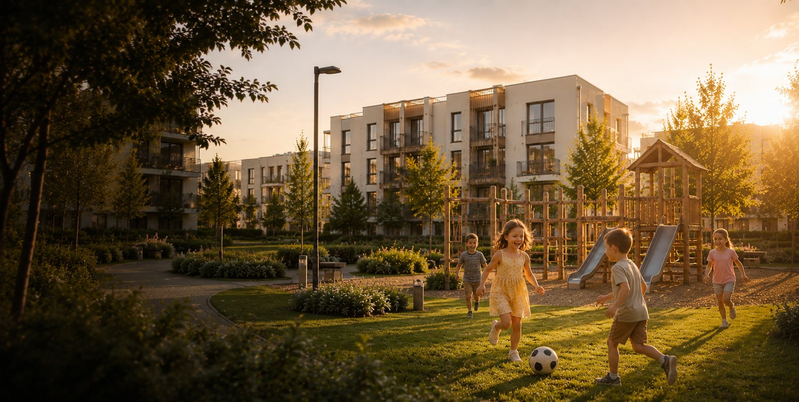
Gundelfingen a.d. Donau
Bayerisch-Schwaben
Wir schaffen ein nachhaltiges
Zuhause.Investieren in die Zukunft.
Auf dem ehemaligen Schwarz-Areal entsteht ein lebendiges, nachhaltiges Quartier zum Wohnen — mitten in Bayerisch-Schwaben.
Möglichkeiten besprechen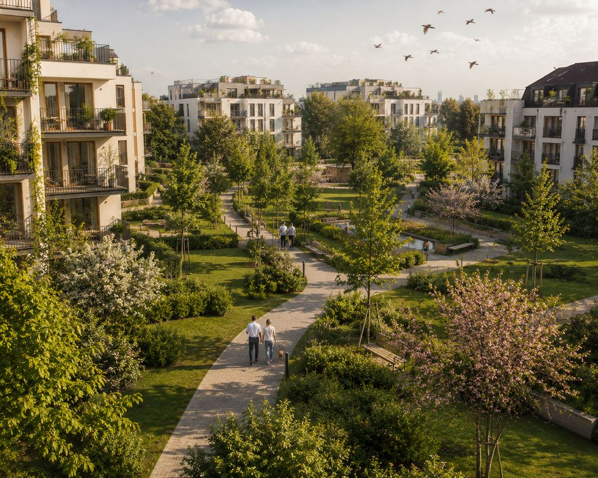
Aus einer Brachfläche wird neues Zuhause.
Auf rund 22.000 m² entwickeln wir ein modernes Wohnquartier mit Mehrfamilienhäusern, Stadt-, Reihen- und Einfamilienhäusern, umgesetzt in mehreren Bauabschnitten.
Im Mittelpunkt steht durchgrüntes, zukunftsfähiges Wohnen für unterschiedliche Lebensphasen — mit kurzen Wegen, hoher Aufenthaltsqualität und einem stimmigen Gesamtbild.
Vielfalt an Wohnformen und Freiräumen.
Vom Mehrfamilienhaus bis zum Reihenhaus, vom Quartierstreff bis zum Mobilitäts-Hub — durchdacht zusammengefügt.
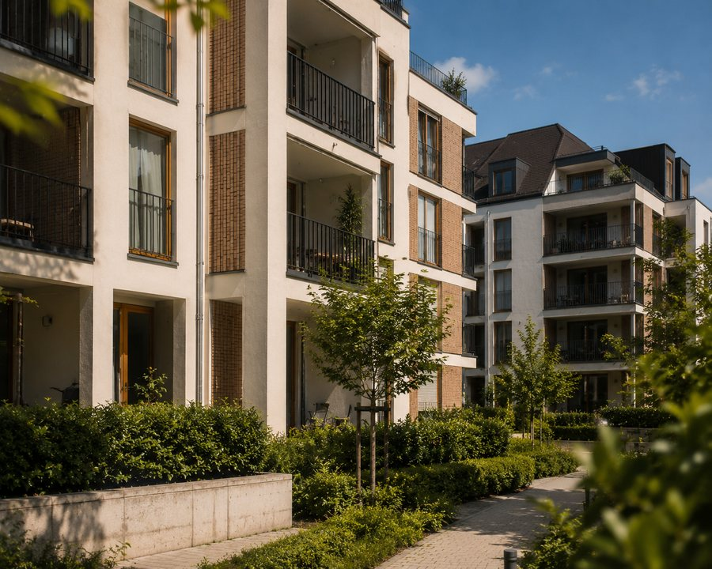
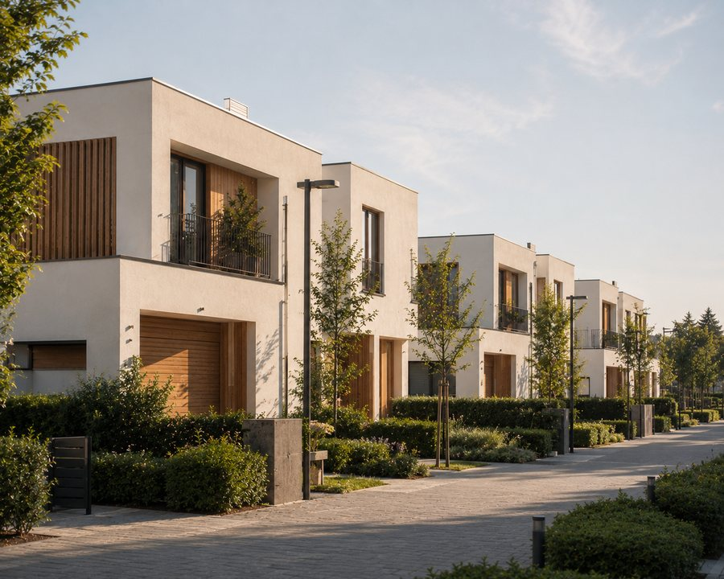
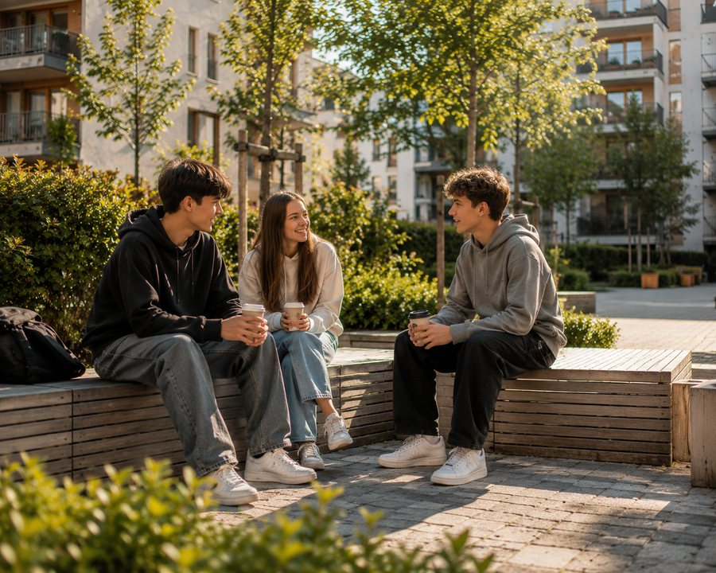
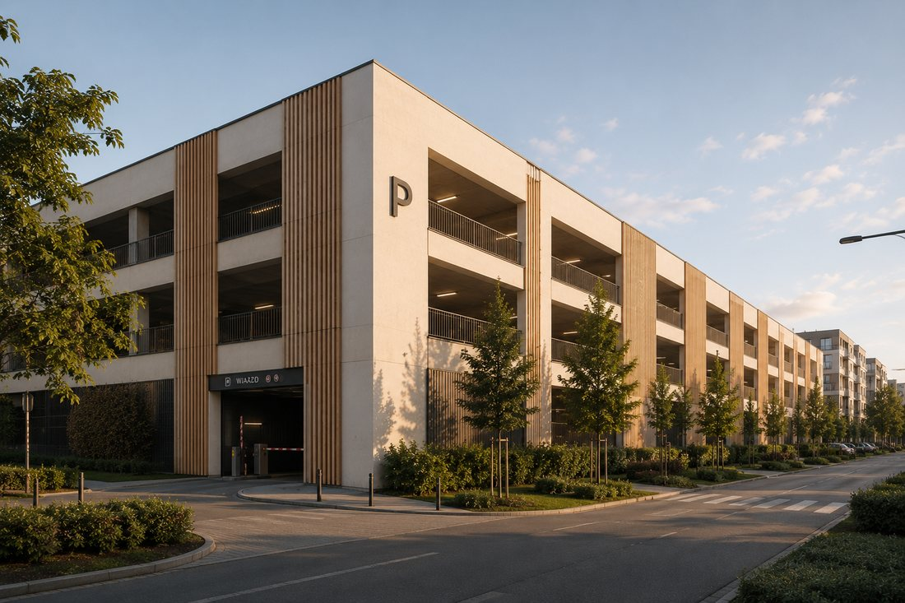
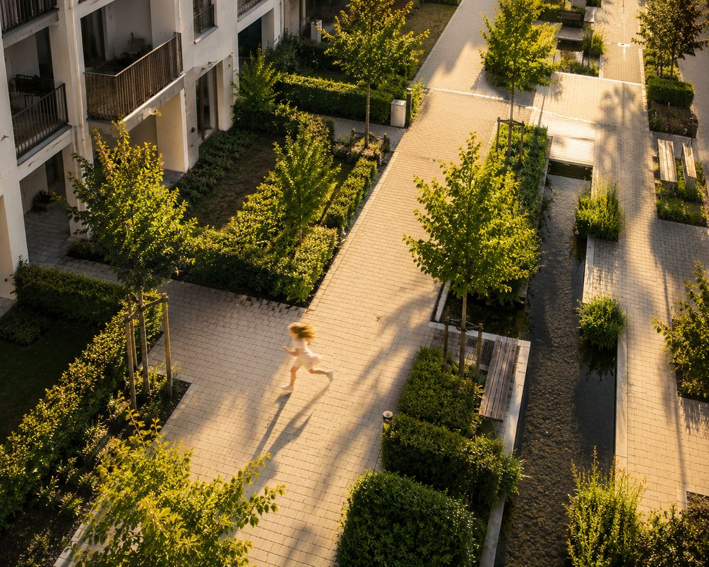
Als klimaneutrales Quartier geplant.
Wir bauen im Neubaustandard KfW 40 mit Nachhaltigkeitssiegel QNG, energieeffizient und mit einem integrierten Energie- und Mobilitätskonzept. Unser Anspruch: eines der ersten klimaneutralen Wohnquartiere im Landkreis Dillingen.
Wohnqualität für jede Lebensphase.
Durchdachte, moderne Grundrisse und eine hohe Wohnqualität stehen im Zentrum. Ein Teil der Wohnungen wird barrierefrei und generationengerecht gestaltet, damit Menschen in jeder Lebensphase gut hier leben können.
Ein eigenes Parkhaus mit Mobilitäts-Hub, ein Quartierstreff und gemeinschaftliche Grünräume schaffen Komfort, Begegnung und Nachbarschaft.
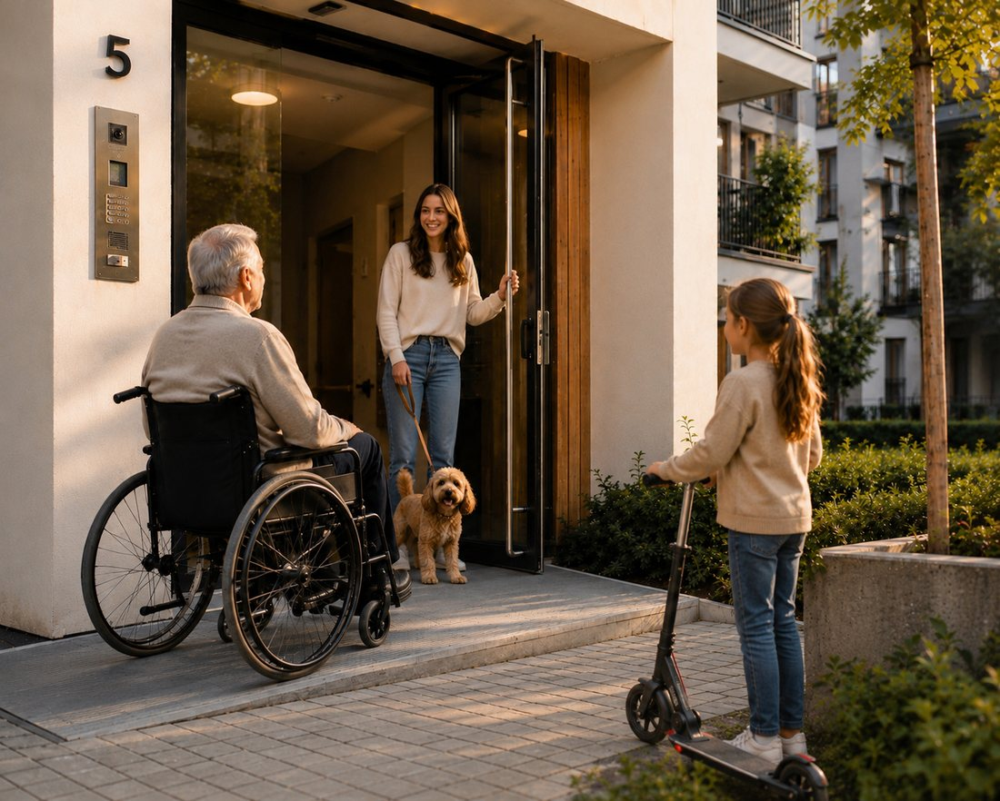
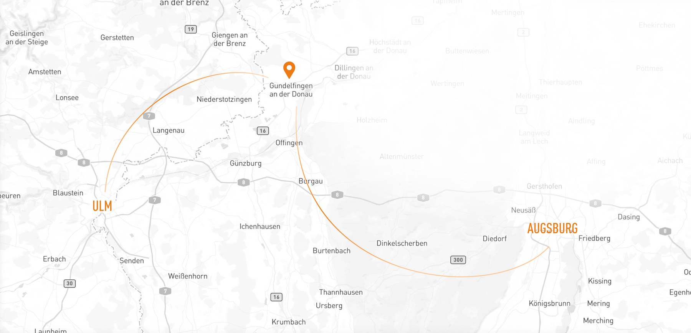
Im starken Korridor Augsburg–Ulm.
Gundelfingen a.d. Donau liegt im wirtschaftsstarken Korridor Augsburg–Ulm mit guter Anbindung (A8/B16, ÖPNV). Die Region verbindet hohe Lebensqualität mit bedeutenden Arbeitgebern in direkter Nachbarschaft und dem zukunftsweisenden Energiestandort Gundremmingen — ein lebenswertes, dynamisches Umfeld.
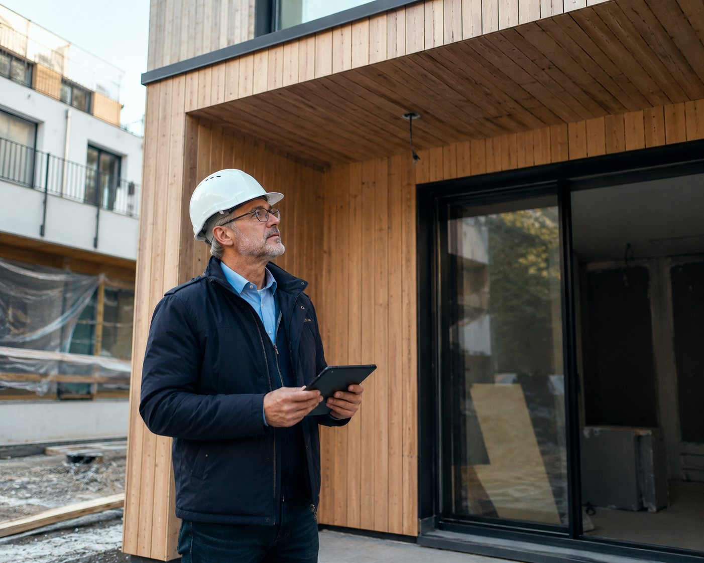
Gemeinsam mit der Stadt entwickelt.
Das Quartier wird in enger, partnerschaftlicher Abstimmung mit der Stadt Gundelfingen entwickelt. Den städtebaulichen Rahmen erarbeiten wir gemeinsam mit dem Büro OPLA (Augsburg); das Bebauungsplan-Verfahren ist auf den Weg gebracht. Baubeginn ist für 2027 vorgesehen.
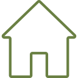
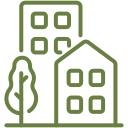
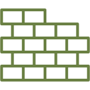
Verschiedene Wege der Zusammenarbeit.
Das Quartier befindet sich in der Abstimmung mit der Stadt. Schon jetzt sind wir offen für unterschiedliche Formen der Zusammenarbeit —
vom Erwerb des Grundstücks bis zur maßgeschneiderten Entwicklung nach Ihren Anforderungen.
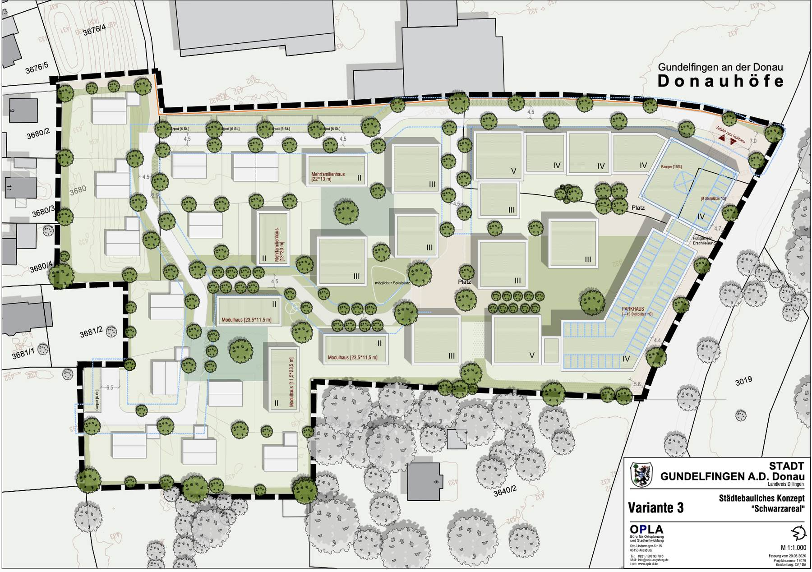
Das Projekt befindet sich in Planung und Abstimmung. Alle Angaben und Visualisierungen sind unverbindlich; Änderungen vorbehalten.
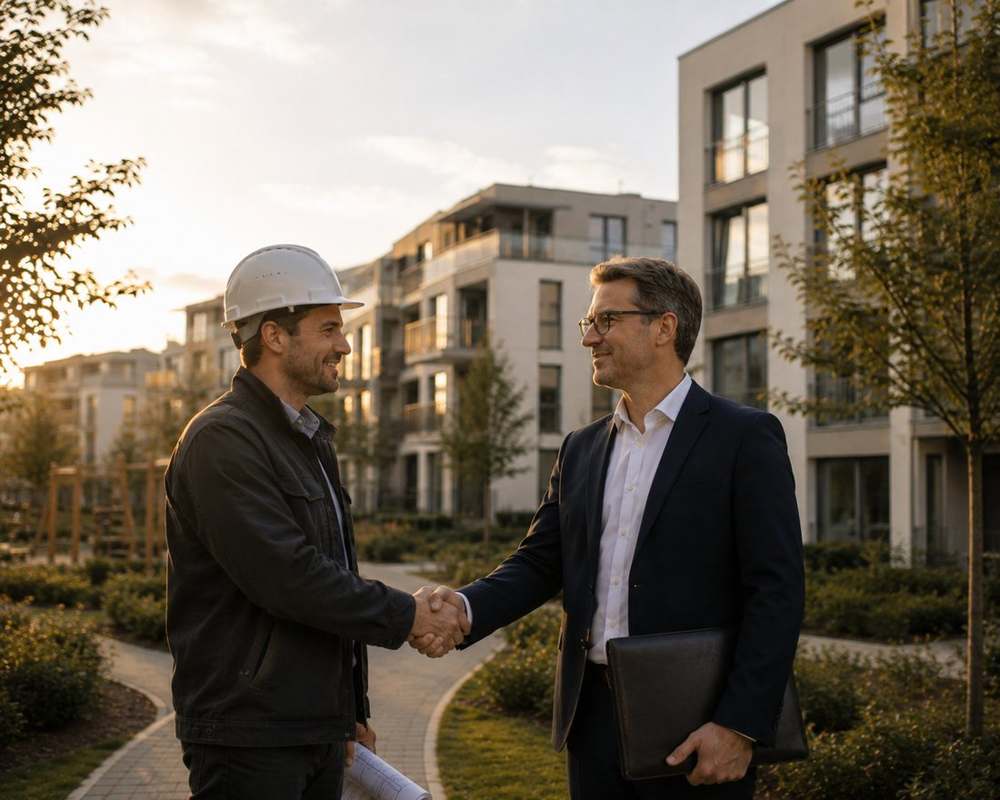
Grundstückserwerb
Erwerb des Areals oder einzelner Bauabschnitte.
Projektentwicklung nach Maß
Wir entwickeln und bauen nach Ihren Anforderungen — Wohnform, Format, Nutzung. Sie erwerben das fertige Objekt.
Gemeinsame Entwicklung
Flexible Kooperationsmodelle und partnerschaftliche Umsetzung.
Entwickelt von der GU-FI GmbH.
DONAU HÖFE wird von der GU-FI GmbH entwickelt — in Zusammenarbeit mit erfahrenen Partnern aus Städtebau und Planung.
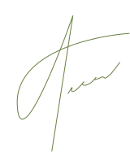
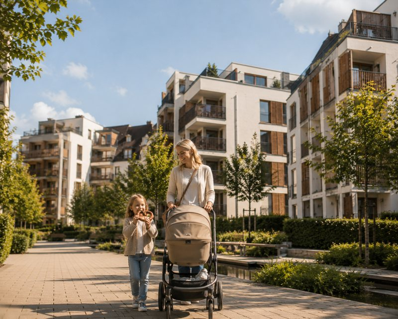
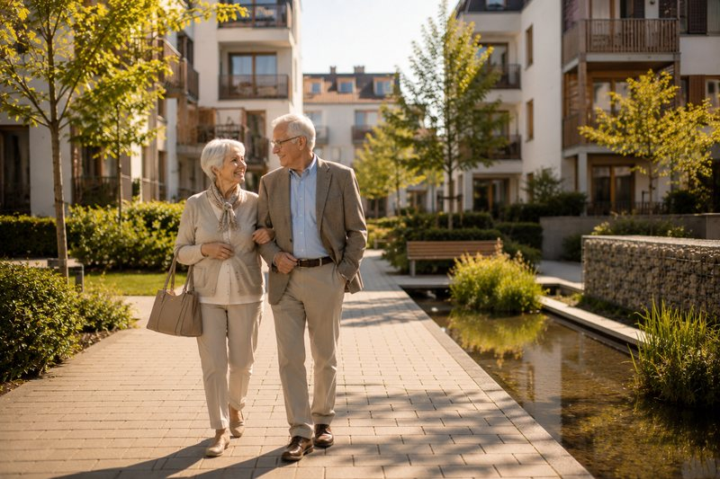
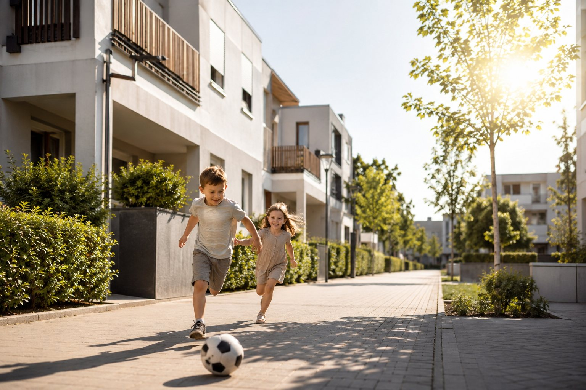
Ein Ort für neue Erinnerungen — für Hunderte von Familien.
Sprechen wir über das Quartier.
Sie haben Fragen zum Quartier oder Interesse an einer Zusammenarbeit? Wir freuen uns auf Ihre Nachricht.
- GesellschaftGU-FI GmbH
- AdresseRöntgenstraße 40a, 86368 Gersthofen
- E-Mailkontakt@donau-hoefe.de
- Telefon+49 151 22555558